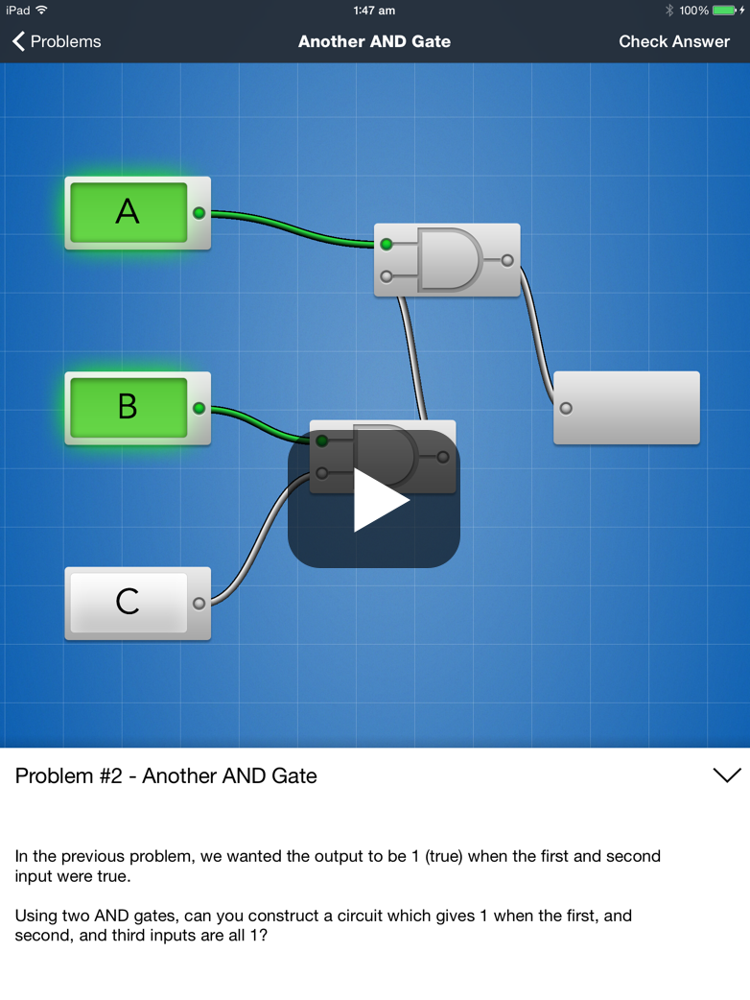

Gate 01 · Q = A · B
Start with the gate
A logic gate calculates a true or false output from input signals. Circuitry makes that relationship visible as you connect each piece.
[ Logic puzzles for iPad ]
Build, test, and debug digital circuits through focused puzzles that make Boolean logic feel tangible.

[ Learn by wiring ]
Gate 01 · Q = A · B
A logic gate calculates a true or false output from input signals. Circuitry makes that relationship visible as you connect each piece.
Gate 02 · Q = A + B
Progress through increasingly complex problems by linking AND, OR, XOR, and other components into complete circuit diagrams.
Gate 03 · Q = A ⊕ B
Unlock elements over time, then use Playground Mode to test your own ideas and see how circuit designs behave.
[ Try it ]
Pick a gate, then tap A and B. The truth table follows along.
| A | B | Q |
|---|---|---|
| 0 | 0 | |
| 0 | 1 | |
| 1 | 0 | |
| 1 | 1 |
[ Motion reel ]
[ Screenshots ]